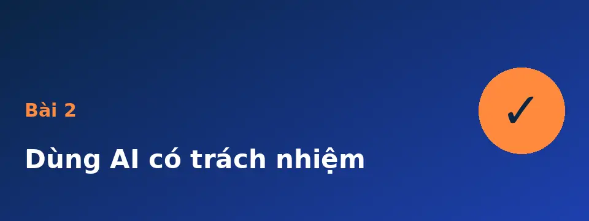
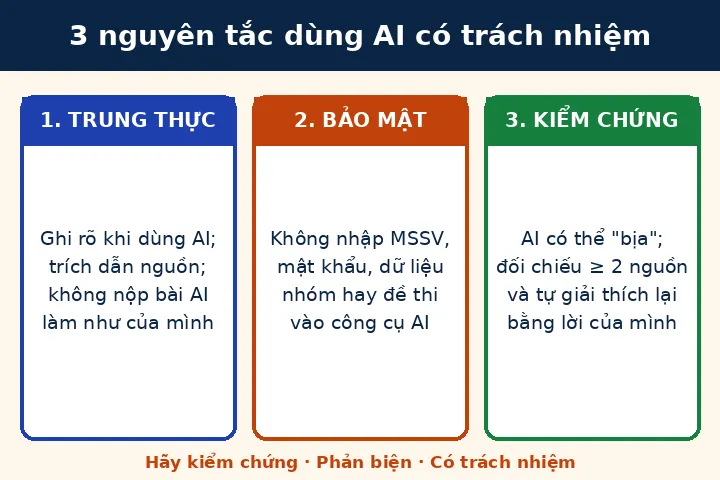

Dùng AI có trách nhiệm

Mục tiêu bài học
Sau bài này bạn có thể nêu ba nguyên tắc dùng AI có trách nhiệm và áp dụng vào bài tập của mình.
- Trung thực: ghi rõ khi dùng AI, trích dẫn nguồn.
- Bảo mật: không đưa dữ liệu cá nhân hoặc dữ liệu nhóm vào công cụ AI.
- Kiểm chứng: không tin kết quả của AI khi chưa đối chiếu.
Xem video bài giảng
Đọc bản chữ của video
- Bài hai. Dùng AI có trách nhiệm. Ba nguyên tắc: trung thực, bảo mật và kiểm chứng.
- Nguyên tắc một, trung thực. Hãy ghi rõ khi bạn dùng AI, và trích dẫn nguồn. Đừng nộp sản phẩm của AI như của chính mình.
- Nguyên tắc hai, bảo mật. Đừng nhập mật khẩu, mã số sinh viên hay tài liệu của nhóm vào công cụ AI.
- Nguyên tắc ba, kiểm chứng. AI có thể trả lời sai một cách rất tự tin. Hãy đối chiếu ít nhất hai nguồn, rồi tự giải thích lại bằng lời của mình.
- Tóm lại: trung thực, bảo mật, kiểm chứng. Hãy làm câu hỏi tự kiểm tra ở cuối bài.
Nghe thay vì xem
Nếu mạng yếu hoặc muốn tiết kiệm dữ liệu, bạn có thể nghe bản âm thanh (khoảng 360 KB).
Tóm tắt bằng hình

Câu hỏi tự kiểm tra
Câu 1. Bạn dùng AI để viết nháp bài tập. Nên làm gì khi nộp bài?
Ghi rõ bạn đã dùng AI ở bước nào, kiểm tra lại nội dung và chỉnh sửa bằng hiểu biết của mình theo quy định của môn học.
Câu 2. Có nên dán danh sách họ tên và mã số sinh viên của nhóm vào công cụ AI để nhờ chia việc?
Không. Hãy thay bằng tên giả hoặc chỉ mô tả công việc; dữ liệu cá nhân có thể bị lưu hoặc lộ.
Câu 3. AI đưa ra một con số rất cụ thể nhưng không nêu nguồn. Bước tiếp theo là gì?
Tìm ít nhất hai nguồn đáng tin cậy để đối chiếu; nếu không tìm thấy thì không dùng con số đó.